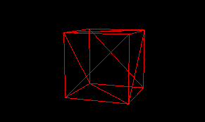
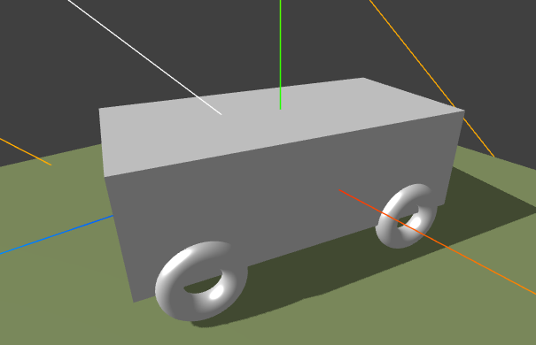

ECharts & WebVR 学院

demo
No. 1 - Three.js 入门

No. 2 - 光与影
No. 3 - 材质与纹理
No. 4 - 照相机和交互控制
No. 5 - 动画
No. 6 - 外部模型
WebGL No.7 - 着色器
WebGL No.8 - 物理引擎
WebGL No.9 - WebVR
WebGL No.10 -【综合】追风年代：第一人称三维赛车游戏